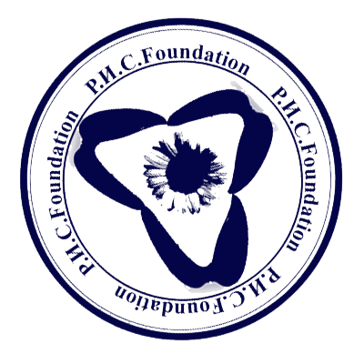
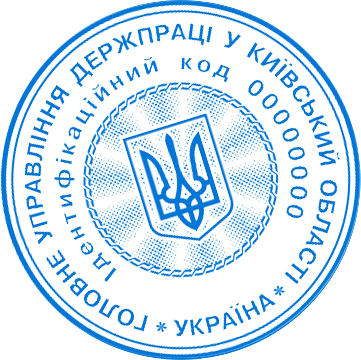
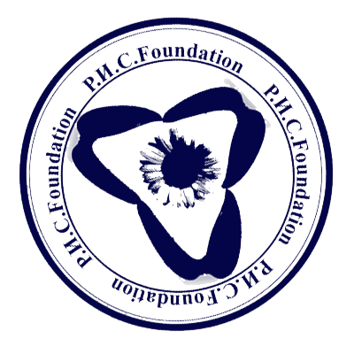
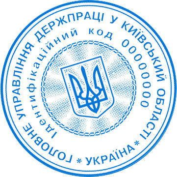

Вы будете в безопасности.
(Фонд Российской Исследовательской Службы) - Организация, занимающаяся чисткой интернета от зловредной информации, в которой не нуждаются граждане нашей страны. В нашей Базе Данных содержится более 2 тыс. заблокированных страниц , которая с каждым днем увеличивается. Благодаря высокой продуктивности государство вкладывает в нас огромные суммы денег, что способствует к выполнению проекта "Изоляция России ".
Подчинитесь нам.
УКАЗ
ПРЕЗИДЕНТА РОССИЙСКОЙ ФЕДИРАЦИИ
О внесении изменений в некоторые указы
Президента Российской Федерации
В целях обеспечения тотального контроля над гражданами РФ и защиты граждан РФ от нежелательных материалов для поддержки пропаганды государства, постанавляю :
1.Создать организацию "Фонд Р.И.С", которая будет заниматься чисткой нежелательных материалов.
2.Организация должна помещать весь нежелательный материал в архив, доступ к которому будет ограничен.
3.Указ вступает в силу 05 апреля 2019 года.
Президент
Росийской Федерации
В.В. Путин
 



Москва,Кремль
23 апреля 2017 года
№ 631
Мы знаем про вас всё.
На законодательном уровне нам разрешается следить за каждым гражданином, находящимся на территории РФ. Каждый день мы просматриваем огромное кол-во личной информации, заводим досье на проверяемых,которых составлено более 732 тыс. Эти данные позволяют нам манипулировать людьми, запугивать их при неподчинении.